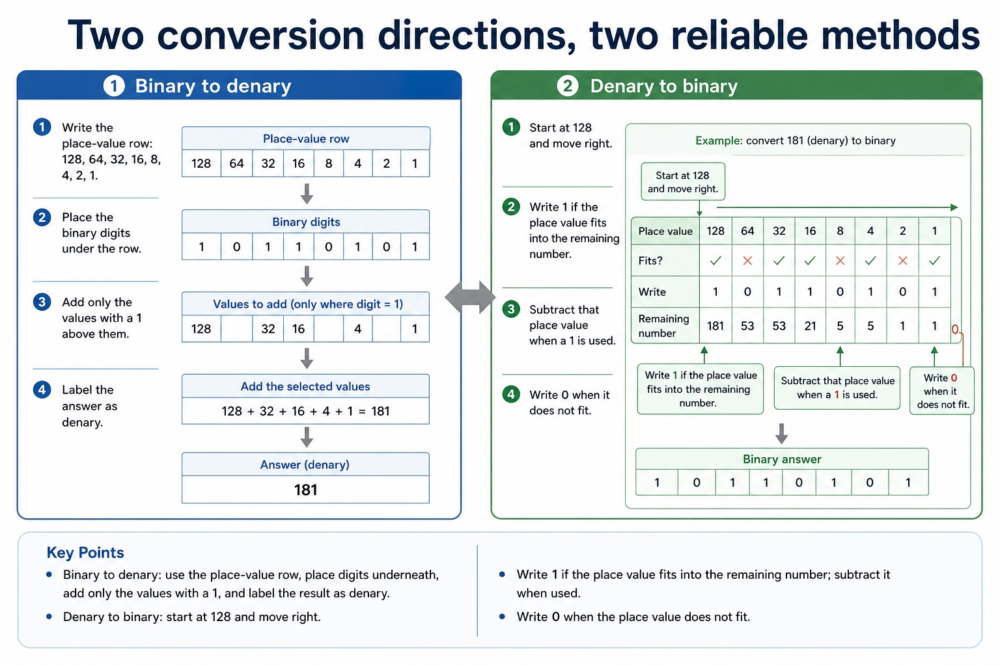
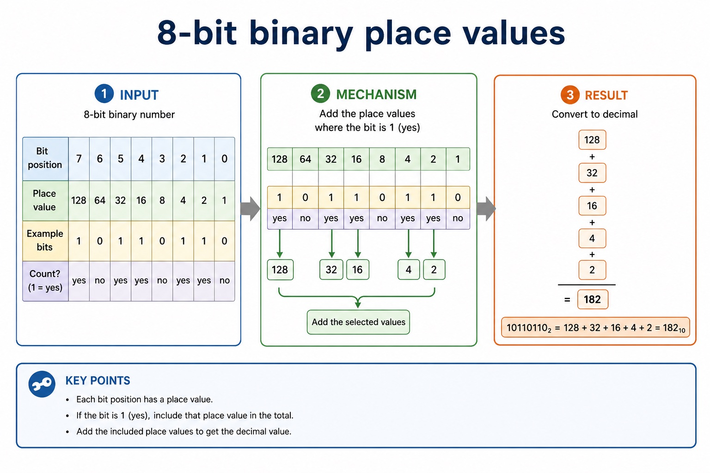
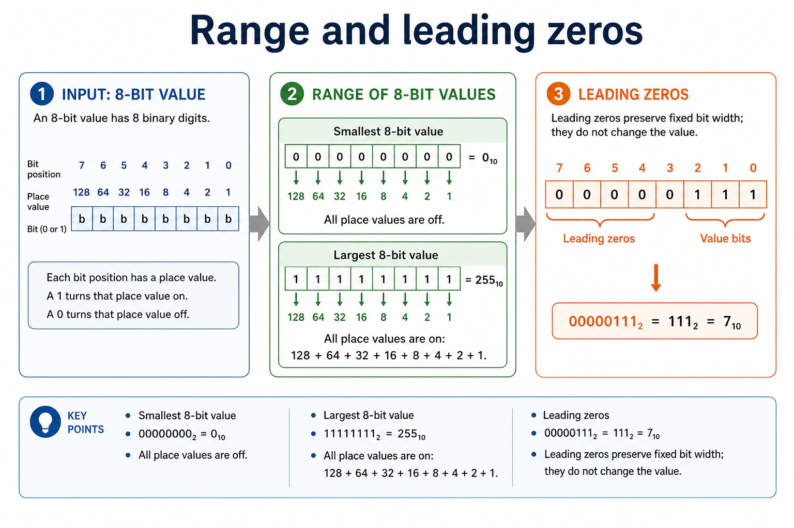

Binary is base 2 and uses place values that are powers of 2. Denary is base 10 and uses place values that are powers of 10. A base label identifies the representation; it does not change the integer value.
To convert a binary integer to denary, add the binary place values whose bits are 1. To convert a denary integer to binary, select powers of 2 that sum to the value and write every required bit position, including zeros.
Representation overview: the required integer representations are binary, denary, hexadecimal, BCD, one's-complement and two's-complement. Conversion means preserving the integer value while changing its base or signed representation.
Worked example: Convert the same integer in both directions
10110110 binary = 128 + 32 + 16 + 4 + 2 = 182 denary. Reversing the process, 182 = 128 + 32 + 16 + 4 + 2, so the 8-bit binary representation is 10110110.
Three ways to represent negative binary values
Three ways to represent negative binary values: source-grounded visual explanation.
Lesson fact: Positive 23 in 8 bits is 00010111.
Lesson fact: The 8-bit sign-and-magnitude representation of -23 is 10010111.
Lesson fact: The 8-bit one's-complement representation of -23 is 11101000.
Lesson fact: The 8-bit two's-complement representation of -23 is 11101001.
Lesson fact: Every input, intermediate state and result must contain exactly 8 bits.
Two conversion directions, two reliable methods

Two conversion directions, two reliable methods: source-grounded visual explanation.
Lesson fact: Place the binary digits under the row.
Lesson fact: Add only the values with a 1 above them.
Lesson fact: Label the answer as denary.
Lesson fact: Denary to binary
Lesson fact: Start at 128 and move right.
Lesson fact: Write 1 if the place value fits into the remaining number.
Lesson fact: Subtract that place value when a 1 is used.
Lesson fact: Write 0 when it does not fit.
Core syllabus practice
Integer conversion between binary and denary: apply and assess
Targeted practice
1. Convert the binary integer 01001101 to denary.
Show answer
77.
2. Convert the denary integer 129 to 8-bit binary.
Show answer
10000001.
3. Why must a base or representation be stated?
Show answer
The same digit string can represent different integer values in different number bases.
Exam-style question
4 marks
Convert 156 denary to 8-bit binary, then convert your binary answer back to denary as a check.
Show MS
Answer
Guidance
Marks
selects 128 + 16 + 8 + 4
Do not award an unlabelled digit string when the base is ambiguous.
1
10011100
1
re-expands the binary place values
1
returns to 156 denary
1
Lesson 002 | 45 minutes | Informal questioning
Binary is place value with only two digits.
This lesson converts between positive denary integers and 8-bit binary values.
The core exam skill is showing which place values are counted, not just producing
a number that looks plausible.
Read8-bit binary using place values from 128 to 1
Convertbinary to denary and denary to binary with working
Checkrange, leading zeros and base labels in exam answers
10110110₂
Which place values are switched on?
Why this matters
Cambridge-style calculation marks often reward visible columns and base labels.
Common error
Do not count every column. Only count a place value when the bit above it is 1.
Warm-up hook
Is `10110110₂` closer to 100 or 200?
Pick an answer. Then prove it with place values.
Knowledge point 1
8-bit binary place values
Bit position76543210
Place value1286432168421
Example bits10110110
Count?yesnoyesyesnoyesyesno
`10110110₂ = 128 + 32 + 16 + 4 + 2 = 182₁₀`
binary 二进制denary 十进制place value 位值most significant bit 最高有效位least significant bit 最低有效位
8-bit binary place values

8-bit binary place values: source-grounded visual explanation.
Write `1` if the place value fits into the remaining number.
Subtract that place value when a `1` is used.
Write `0` when it does not fit.
Common error
Students often add a zero column or skip a column. Eight-bit answers need exactly eight bits.
Knowledge point 4
Range and leading zeros
Smallest 8-bit value
00000000₂ = 0₁₀
All place values are off.
Largest 8-bit value
11111111₂ = 255₁₀
All place values are on: 128 + 64 + 32 + 16 + 8 + 4 + 2 + 1.
Leading zeros
00000111₂ = 111₂ = 7₁₀
Leading zeros preserve fixed bit width; they do not change the value.
Range and leading zeros

Range and leading zeros: source-grounded visual explanation.
Lesson fact: Smallest 8-bit value
Lesson fact: 00000000₂ = 0₁₀
Lesson fact: All place values are off.
Lesson fact: Largest 8-bit value
Lesson fact: 11111111₂ = 255₁₀
Lesson fact: All place values are on: 128 + 64 + 32 + 16 + 8 + 4 + 2 + 1.
Lesson fact: Leading zeros
Lesson fact: 00000111₂ = 111₂ = 7₁₀
Lesson fact: Leading zeros preserve fixed bit width; they do not change the value.
Interactive tool
8-bit binary and denary converter
Knowledge examples
Worked examples
Your turn
Practice with instant checking
Debug the mistakes
Identify and correct the error
Mistake 1
10110110₂ = 128 + 64 + 32 + 16 + 8 + 4 + 2 + 1
Only columns with a `1` are counted: 128 + 32 + 16 + 4 + 2 = 182.
Mistake 2
7₁₀ = 1111111₂
As an 8-bit value, 7 is `00000111₂`. Leading zeros keep the bit width.
Past-paper style
Original exam-style questions
These are original Cambridge-style questions, not copied Cambridge past paper text.
Use the buttons under each question to expand the Cambridge-style mark scheme.
Summary
Summary of required knowledge
1Binary place values double from right to left.
2Binary to denary means adding only the active columns.
38-bit positive integers range from 0 to 255.
Homework
Homework tasks
Convert these binary values to denary, showing columns: `01010101₂`, `11100010₂`, `00011111₂`.
Convert these denary values to 8-bit binary: `19`, `104`, `250`.
Write a 3-mark explanation of why `00001010₂` and `1010₂` have the same value but not the same bit width.
Extension: create one wrong solution and annotate exactly where the mistake happens.